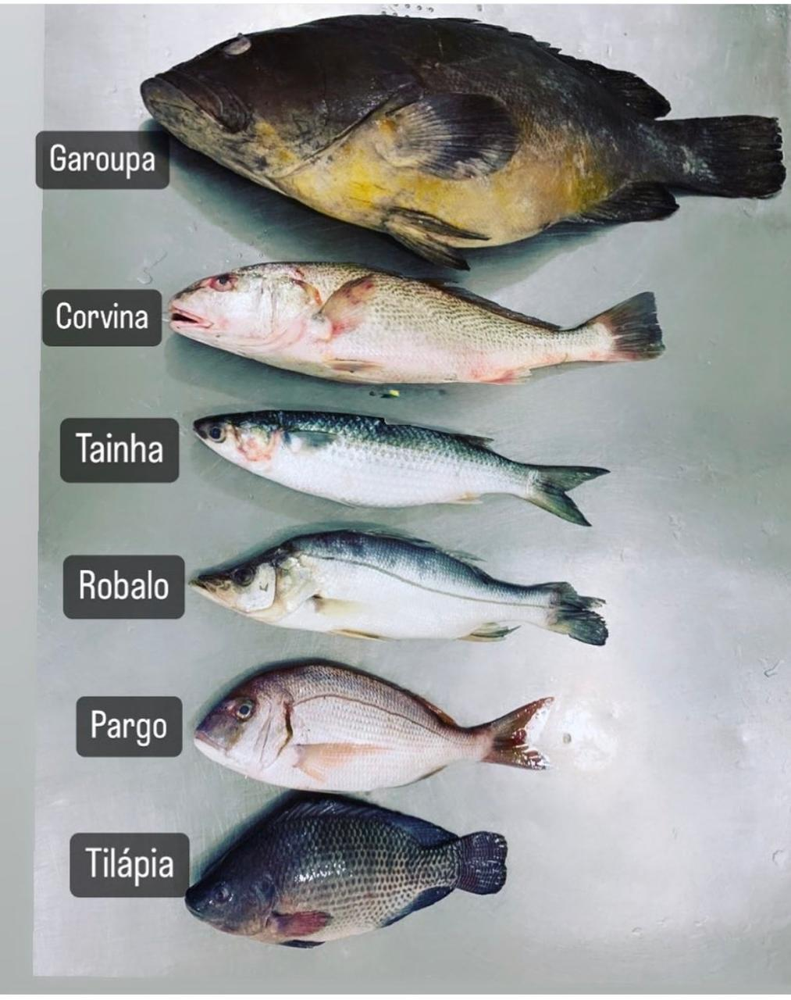

Qualidade que você percebe antes mesmo da primeira compra.
Peixes frescos, filés premium, frutos do mar, congelados e empanados. Tudo selecionado com cuidado para sua mesa.

Seleção premium para sua mesa
Nossa empresa tem SISBI
Você sabe o que isso significa?
O SISBI (Sistema de Inspeção de Produtos de Origem Animal) é um selo oficial que permite que nossos pescados sejam comercializados em todo o Brasil com total segurança e qualidade.
Na prática, isso garante a você:
- Produtos fiscalizados e dentro das normas sanitárias
- Procedência confiável e rastreável
- Um pescado de qualidade superior, pronto para sua mesa
Com SISBI, nosso compromisso é levar o melhor pescado do nosso estado para todo o país – com o selo de quem você pode confiar.
Da Resiliência à Conquista da Sede Própria
Um começo movido pelo propósito
A MM Pescados nasceu em um dos momentos mais desafiadores da história recente: em meio à pandemia global. Enquanto o mundo se isolava, nossos fundadores — profissionais com mais de 15 anos de expertise no setor — enxergaram uma missão clara: levar pescados de altíssima qualidade diretamente às casas das pessoas, com segurança e praticidade.
O que começou com vendas de porta em porta em condomínios logo se transformou em algo muito maior. Ali, no contato direto, descobrimos o verdadeiro prazer de atender famílias e construímos o nosso maior ativo: relacionamentos baseados em total confiança.
Do artesanal ao processamento industrial
O sucesso da operação domiciliar abriu portas. Fomos convidados a gerenciar uma peixaria física e, nos fundos dessa loja, montamos a primeira estrutura da Indústria MM. Foi o início do nosso processamento profissional, onde unimos o cuidado artesanal à escala necessária para atender um mercado cada vez mais exigente.
Nossa marca expandiu-se rapidamente. Em pouco tempo, a MM Pescados tornou-se fornecedora estratégica para grandes redes de supermercados e parceira de confiança para hotéis e restaurantes renomados, consolidando nossa reputação pela excelência do produto.
O Grande Desafio e a Nova Era (2026)
O ano de 2026 marcou o capítulo mais intenso da nossa jornada. O crescimento acelerado exigia um espaço que suportasse nossa operação. Enfrentamos o desafio de deixar nosso antigo ponto e encarar uma transição complexa e trabalhosa.
Nesse período, o apoio de amigos e parceiros comerciais foi o alicerce que nos manteve firmes. Em maio de 2026, o sonho se materializou: concluímos a mudança e inauguramos nossa sede própria em Florianópolis. Hoje, operamos em uma estrutura fabril moderna e centralizada, prontos para os próximos 15 anos de inovação.
Nossa Gratidão
Não chegamos aqui sozinhos. Nossa eterna gratidão a todos os clientes, amigos e parceiros que estenderam a mão, acreditaram no nosso sonho e tornaram possível a conquista da nossa própria casa.
MM Pescados – Do mar à sua mesa, com a confiança de quem conhece.
Qualidade em cada detalhe
Processo rigoroso de seleção, armazenamento e manipulação para garantir que você receba o melhor do mar.
Frescar Garantida
Seleção cuidadosa desde a origem, garantindo total frescor e qualidade em cada produto que chega à sua mesa.
Certificado SISBI
Selo oficial que permite comercialização em todo o Brasil com total segurança e procedência rastreável.
Controle de Temperatura
Armazenamento em temperatura controlada desde o recebimento até a entrega, preservando todas as propriedades nutricionais.
Confiança Total
Relacionamento construído na transparência, rastreabilidade e compromisso com a excelência em cada transação.
Experiências reais de clientes satisfeitos
"A qualidade dos peixes é impecável! Sempre fresco e entrega rápida. Recomendo muito!"
"Fornecedor de confiança para nossa cozinha. Produtos com excelência consistente."
"Mudou minha forma de cozinhar! Filés frescos que fazem toda diferença. Voltarei sempre!"
Visite ou peça online.
Rua Deputado Walter Gomes, 340 — Santo Antônio de Lisboa
Florianópolis/SC • CEP 88050-501
Atendimento presencial, WhatsApp e loja virtual para você comprar com praticidade, segurança e qualidade premium.